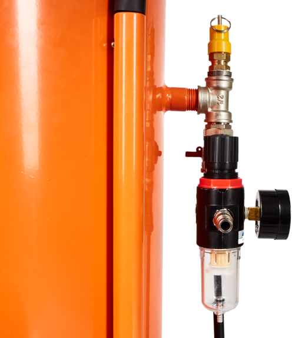

Единственный автоматический
пескоструй
«Спутник»
-
Профессиональное оборудование
Отсоединение компрессора без потери давления
Работает в любых погодных условиях -
Конусный резервуар с обеих сторон
Песок при работе не зависает
Воронка не нужна -
Полная комплектация
Комплектующие сертифицированы
Заполняете песком и работаете -
Автоматическая подача песка
Не забивает шланг и не «плюется»
Работа с любым абразивом
Создано профессионалами
Уникальные разработки конструкторского отдела в вашем аппарате
-
Контролируйте ситуацию
Уникальная система управления
«Спутник» позволяет регулировать давление сразу в двух местах: в баке и самой системе.
Бак контролируется при помощи крана, который фиксирует уже имеющееся давление в бункере и не позволит воздуху выйти наружу впустую. Компрессор при этом можно легко отключить и использовать в других целях. Давление в системе регулируется через осушитель. -
Забудьте про воронку
Удобная форма верхней части бака
Если горлышко на баке маленькое и узкое, наполнить бункер абразивом и ничего не просыпать возможно только с помощью воронки.
Благодаря новой форме пескоструя «Спутник» абразив попадает внутрь без дополнительных приспособлений.
-
Неудобствам «крышка»
Легко крепится и снимается
При узкой горловине пескоструйного аппарата абразив постоянно остаётся на резьбе, что приводит к быстрому износу. Крышка «Спутника» имеет совершенно новую конструкцию и прижимается за счёт давления в баке.
Это гарантирует:
- долгий срок службы
- лёгкий и быстрый монтаж/демонтаж
- надёжное, герметичное соединение
-

Надёжность по ГОСту
Манометр и клапан сброса давления по ГОСТу
Пескоструй работает под давлением 4–8 атм.
Безопасность работы обеспечивают:- спускной клапан на 8 атм. ГОСТ 31294–2005, сертифицирован;
- манометр на 10 атм Класс точности 2,5.
Оборудование проверяют на стендах высокого давления квалифицированные специалисты.
Все этапы проверки регламентированы.
Принцип работы
пескоструя «Спутник»
К пескоструйному аппарату с помощью быстросъёмного соединения (1) подключается компрессор. Пройдя через осушитель (2), воздух отделяется от влаги и уже сухим попадает в бак (3). Благодаря специальному крану (4), перекрывающему давление, вы в любой момент можете выключить компрессор и использовать его в других целях. Давление надёжно удержится внутри бака.
Песок, который подаётся через жиклер (5), смешивается с воздухом в распределительном узле (6). Когда воздушный поток прекращается, абразив достигает предельного уровня в крестовине (7) и перестаёт сыпаться дальше. При повторном открытии пистолета (8) по шлангу (9) снова начинает идти воздух, подхватывая скопившийся песок. Но если пистолет закрыт, абразив не скапливается и не забивает шланг.
Давление в системе контролируют спускные клапаны (10), а манометр (11) показывает избыточное давление.
Пескоструй «Спутник» в деле
Чистка от ржавчины, удаление краски, обработка древесины и матирование стекла

«Спутник»: новейший аппарат, в котором нет недостатков обычных пескоструев
| Неоправданно дорогой пескоструйный аппарат | Обычный пескоструйный аппарат | «Спутник» 2022 |
|
Широкая горловина, в которую удобно засыпать песок. |
Узкая горловина с резьбой, в которую постоянно забивается песок. |
Широкая горловина, в которую удобно засыпать песок. |
|
Нет возможности делать прочистку каналов во время использования. Чтобы прочистить жиклер, нужно полностью отключить и разобрать аппарат. |
Нет возможности делать прочистку каналов во время использования. Чтобы прочистить жиклер, нужно полностью отключить и разобрать аппарат. |
Благодаря усовершенствованным каналам жиклера, их чистку можно делать прямо во время использования аппарата. |
|
Удобная заглушка на баке, которую не нужно закручивать. |
Стандартная заглушка с резьбой. Чтобы закрыть бак, нужно много сил и времени. |
Удобная заглушка на баке, которую не нужно закручивать. |
|
Есть быстросъёмное соединение для подачи воздуха. |
Нет быстросъёмного соединение для подачи воздуха. Необходимы дополнительные штуцеры и постоянное стягивание шланга хомутом. |
Есть быстросъёмное соединение для подачи воздуха. Всё быстро и удобно: никаких дополнительных штуцеров, не нужно снимать/надевать шланг и стягивать его хомутом. |
|
В комплекте шланг, утверждённый по ГОСТу и предназначенный специально для пескоструйных аппаратов. |
В комплекте обычный шланг, не предназначенный пескоструйных аппаратов. |
В комплекте шланг, утверждённый по ГОСТу и предназначенный специально для пескоструйных аппаратов. |
|
Дорогой узел подачи с шиберным краном, предназначенный для песка и абразивов. |
Узел подачи с шаровым краном, который не предназначен для песка и «заклинит» через 2-3 применения. |
Автоматический узел подачи, разработанный специально для работы с абразивами. |
|
Нет осушителя воздуха. Аппарат работает с перебоями и «плюются» песком. |
Есть осушитель воздуха. Аппарат работает без перебоев и не «плюются» песком. |
Есть осушитель воздуха. Аппарат работает без перебоев и не «плюются» песком. |
|
в среднем 52 287 ₽ |
в среднем 12 750 ₽ |
по акции 11 750 ₽ |
Пескоструйный аппарат «Спутник» в деталях
Мелочей не существует

- Быстросъёмные соединения на компрессор
- Осушитель воздуха
- Загрузочный бункер
- Шланг подачи абразива
- Пистолет
- Манометр
- Аварийный клапан
- Кран для перекрытия давления
- Распределительный узел
- Колёса
Быстросъёмные соединения на компрессор
Обеспечивают моментальное подключение и отключение компрессора от пескоструйного аппарата.
Осушитель воздуха
- Регулирует подачу воздуха в бункер;
- предварительно очищает воздух от лишней влаги;
- регулирует давление в пескоструе
Загрузочный бункер
Иными словами — бак, в который засыпается песок и накачивается давление.
- Изготовлен из высококачественной углеродистой стали;
- имеет объём 10/20/30 л.
ГОСТовский напорный рукав высокого давления
Передаёт воздух и воздушно-песочную смесь.
- Выдерживает давление 8 атм;
- устойчив к кислотной и щелочной среде;
- имеет трёхслойные напорные рукава из резины.
Пистолет
Контролирует подачу воздушно-песочной смеси.
Радиальный манометр
Прибор, который показывает давление в замкнутом пространстве.
- Делает безошибочные замеры;
- контролирует давление;
- имеет точность показаний 0,25 МПа.
Аварийный клапан
Обеспечивает безопасное использование пескоструя, срабатывает при достижении давления 8 бар.
Перекрывающий кран
Сохраняет давления внутри загрузочного бункера.
Распределительный узел
- Автоматический контроль подачи песка из загрузочного бункера;
- предоставление возможности лёгкой и быстрой чистки жиклера (канала подачи песка);
- предотвращение накопления песка в шланге.
Колёсики
В конструкцию входят два колеса, присоединённых к раме. Они с лёгкостью перемещают пескоструй практически по любой местности.
«Спутник» на любой случай!
Выберите свой пескоструй
-
Спутник, 18 литров
Экономный, но очень эффективный!
Характеристики:- Диаметр: 300 мм
- Высота: 390,5 мм
- Вес: 5,3 кг
0 000 ₽ 0 000 ₽-20% -
Спутник, 24 литров
Для тех, кто ищет компромисс между ценой и литражом.
Характеристики:- Диаметр: 300 мм
- Высота: 480,5 мм
- Вес: 9 кг
0 000 ₽ 0 000 ₽-20% -

Спутник, 30 литров
Повышенный объём для мастерских и бизнеса!
Характеристики:- Диаметр: 300 мм
- Высота: 570,5 мм
- Вес: 14 кг
0 000 ₽ 0 000 ₽-20%
В работе может вам помочь
-

Универсальное сито для абразива
Для того, чтобы ваш пескоструй прослужил действительно долго, необходимо просеивать абразив, который попадает в бункер. В этом вам легко поможет сито.
Характеристики:
- Диаметр: 315 мм
- Высота: 110 мм
- Вес: 1 кг
- Материал: углеродистая сталь
7 990 РУБ. 7 990 РУБ.
Реальные фото


{kind=link}
Вы заказываете пескоструй
напрямую с завода!
Для вас это означает:
- Вы не переплачиваете перекупам, а значит, экономите
- Пескоструи всегда в наличии, а значит, отправка произойдет незамедлительно
- Вся продукция проходит отдел ОТК — брак исключён
-
Мы работаем в соответствии с российским
законодательством, а это
значит, что все наши гарантии зафиксированы в "договоре"
Отзывы наших клиентов


-
Транспортной компанией или почтой.
- проверка перед оплатой
- оплата при получении
Курьером в пункт выдачи или прямо домой.
Доставка и оплата
Закажите трубогиб с удобной доставкой: в отделение почты, ближайший пункт выдачи или прямо до двери
Примерная стоимость
доставки по РФ 400-800₽

Срок доставки
от 2 до 7 дней
Чтобы узнать стоимость доставки, нажмите кнопку
«Рассчитать», заполните
и отправьте форму